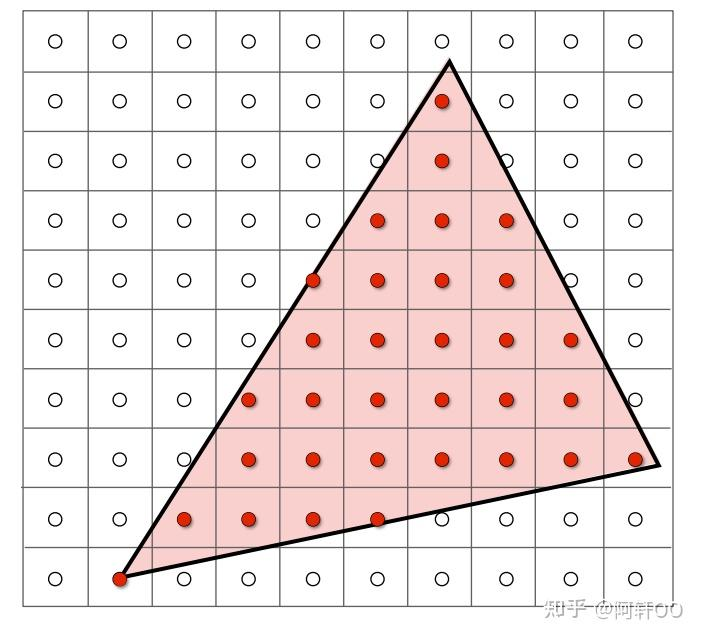
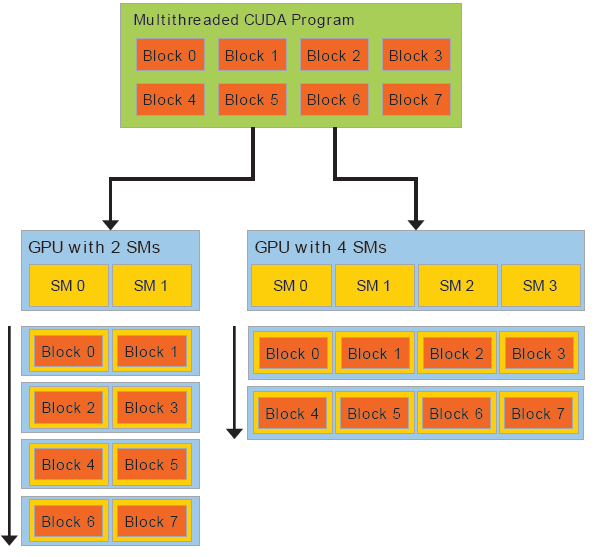
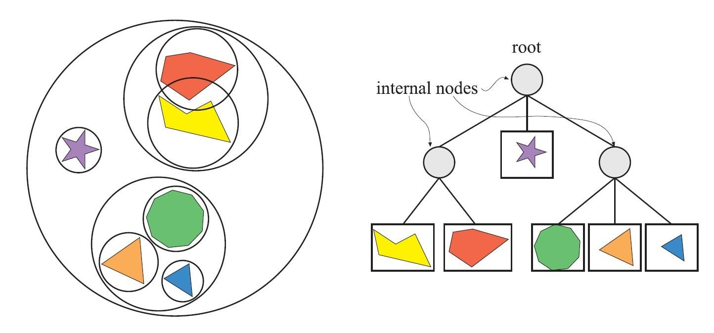

目录
引言
在现代游戏的设置菜单中，我们经常能看到"光线追踪"（Ray Tracing）这个选项。开启后，画面会更逼真——倒影更清晰、阴影更自然、间接光照更柔和。然而，很多玩家的电脑却因此出现帧数下降、运行卡顿的现象。这是为什么？本文将从光栅化渲染出发，系统介绍两种不同的渲染方式，以及它们对硬件算力要求的差异。
图片来源于网络，如有侵权请联系作者删除。
1. 光栅化渲染（Rasterization）
光栅化是自 1990 年代起就广泛使用的传统渲染方式，也是目前大多数游戏默认的渲染管线。它的核心思想是：将 3D 场景投影到 2D 屏幕上，逐像素确定颜色。
1.1 渲染管线流程
光栅化的处理流程大致分为以下几个阶段：
- 顶点处理：将 3D 模型的顶点坐标从模型空间转换到屏幕空间，涉及矩阵变换（模型矩阵、视图矩阵、投影矩阵）
- 图元装配：将顶点连接成三角形面片
- 光栅化：确定每个三角形覆盖了哪些像素，并进行插值计算
- 片段着色：对每个像素执行着色器程序，计算最终颜色
- 深度测试与混合：决定像素的可见性并合成最终画面
1.2 顶点变换与投影矩阵
在顶点处理阶段，每个顶点需要经过一系列矩阵变换：
\[P_{view} = M_{view} \cdot P_{model}\]
\[P_{clip} = M_{proj} \cdot P_{view}\]
其中 \(M_{view}\) 是视图矩阵，\(M_{proj}\) 是投影矩阵。通过这两个矩阵，一个 3D 点 \(P_{model}\) 被变换到齐次裁剪空间。
最终，裁剪空间中的顶点经过透视除法得到归一化设备坐标（NDC），再映射到屏幕像素坐标。
1.3 光栅化原理：扫描线算法
光栅化的核心是确定每个三角形覆盖了哪些像素。最常用的方法是扫描线算法。对于屏幕上的每个水平扫描线，计算它与三角形的相交区间，然后填充区间内的像素。

图片来源于网络，如有侵权请联系作者删除。
1.4 GPU 并行架构
GPU 之所以能高效处理光栅化，得益于其大规模并行架构。一块主流显卡可能拥有数千个流处理器（Stream Processors），每个处理器可以同时处理一个像素的计算。这意味着整个屏幕的百万级像素可以被"同时"计算，大幅缩短了总处理时间。

图片来源于网络，如有侵权请联系作者删除。
2. 光线追踪（Ray Tracing）
光线追踪的灵感来自对现实世界中光线行为的模拟。在现实中，光从光源发出，经过多次反射、折射后进入我们的眼睛。光线追踪正是逆向计算这一过程：从屏幕每个像素出发，向场景中发射光线，追踪它与物体相交后的反射、折射路径，最终计算像素颜色。
2.1 光线方程
光线的数学表示十分简洁。设 O 为光线起点（摄影机位置），d 为光线方向（归一化向量），则沿光线方向任意一点 P 的位置为：
\[P(t) = O + t \cdot d, \quad t \geq 0\]
其中 t 表示从 O 出发沿方向 d 的距离。这是一个简单的一维线性方程，后续计算光线与物体交点都基于此方程。
2.2 光线与球体求交
光线与物体求交是光线追踪最基本的计算。假设球体中心为 C，半径为 r。球体的隐式方程为：
将 \(P = O + t \cdot d\) 代入球体方程，整理后得到关于 t 的二次方程：
解这个二次方程：
- 判别式 \(\Delta = (d \cdot (O-C))^2 - |d|^2(|O-C|^2 - r^2)\)
- 若 \(\Delta < 0\)：无交点
- 若 \(\Delta \geq 0\)：取较小的非负根作为交点距离 t
光线与球体求交的几何意义是：求解光线与球面方程的交点。当光线穿越球体时，会在入口和出口处各产生一个交点，取距离较近的入口点作为实际交点。
2.3 光线与三角形求交
实际场景中更多使用三角形面片。光线和三角形 ABC 求交的步骤：
- 计算光线与三角形所在平面的交点（平面方程：\(n \cdot P + D = 0\)）
- 判断交点是否在三角形内部（使用重心坐标）
\[P = u \cdot A + v \cdot B + w \cdot C, \quad u + v + w = 1\]
若 u, v, w 均在 [0, 1] 区间内，则交点在三角形内。
2.4 递归光线追踪算法
光线追踪的核心是递归地追踪光线的反射和折射路径。算法伪代码如下：
if depth == 0: return BLACK
hit = nearest intersection with scene
if no hit: return SKY_COLOR
P = O + t·d
n = surface normal at P
color = shade material at P
if material is reflective:
r = reflect(d, n)
color += TraceRay(P, r, depth-1)
if material is transparent:
t = refract(d, n)
color += TraceRay(P, t, depth-1)
return color
其中 reflect 和 refract 是关键的向量运算：
\[r = d - 2(d \cdot n)n\]
折射公式（Snell 定律）：
\[\eta_1 \sin(\theta_1) = \eta_2 \sin(\theta_2)\]
\[t = (\eta_1/\eta_2)d - n \cdot ((\eta_1/\eta_2)\cos(\theta_1) - \cos(\theta_2))\]
2.5 BVH 加速结构
直接对场景中每个物体测试光线求交，计算复杂度为 O(N)。为加速这一过程，通常使用 BVH（Bounding Volume Hierarchy）——用层次化的包围盒跳过不必要的求交测试。

图片来源于网络，如有侵权请联系作者删除。
BVH 将场景物体组织成树结构：根节点包围整个场景，叶节点是单个物体。求交时从根节点开始，如果光线与某包围盒无交，则跳过该节点下的所有子节点。平均可将复杂度降至 O(log N)。
3. 路径追踪与俄罗斯轮盘赌
前面介绍的是确定性光线追踪（Deterministic Ray Tracing），它追踪的是固定的光线路径。但在实际中，真实的光线行为具有随机性——光线从光源发出后，可能经过任意次数的反射、折射、散射后才进入摄影机或被完全吸收。这种随机性使得传统光追难以准确模拟全局光照效果。
3.1 路径追踪（Path Tracing）
路径追踪是一种基于蒙特卡罗方法的渲染技术。它的核心思想是：用随机采样模拟光线的随机传播路径，然后用大数定律将采样结果收敛到真实的解。
对于每个像素，路径追踪的采样公式为：
\[L_o(p, \omega_o) = \int_{\Omega} f_r(p, \omega_i, \omega_o) L_i(p, \omega_i) \cos(\theta_i) d\omega_i\]
其中 \(f_r\) 是双向反射分布函数（BRDF），\(L_i\) 是入射光照，\(\cos(\theta_i)\) 是入射角因子。
由于积分无法解析求解，我们用蒙特卡罗方法估计：
\[L \approx \frac{1}{N} \sum \frac{f_r \cdot L_i \cdot \cos(\theta)}{p(\omega)}\]
这里的 \(p(\omega)\) 是采样概率分布。通过多次采样平均，最终结果会收敛到真实的光照值。采样次数 N 越大，噪声越小，画面越平滑。
3.2 俄罗斯轮盘赌（Russian Roulette）
在路径追踪中，光线可以无限弹射（光线在光滑表面会不断反射永不终止）。为避免无限循环，我们需要在某个深度终止递归。但简单的深度截断会引入偏差——因为它系统性地遗漏了长路径的光线贡献。
俄罗斯轮盘赌是一种无偏的终止策略：每当光线追踪到一定深度时，以某个概率 \(p_{terminate}\) 决定是否继续追踪。如果终止，则返回一个启发式估计值；如果继续，则对光线进行加权补偿，使得终止与非终止情况的期望值一致。
if depth > MIN_DEPTH:
if random() < p_terminate:
return ESTIMATED_INDIRECT_LIGHT
else:
weight = 1 / (1 - p_terminate)
return TraceRay() * weight
else:
return TraceRay()
其中 p_terminate 通常取 0.3-0.5，
ESTIMATED_INDIRECT_LIGHT 可以是环境光平均值或 0。
俄罗斯轮盘赌的关键是加权补偿：当光线被终止时，我们不返回 0，而是返回一个合理的估计值；当光线继续追踪时，我们用 \((1 - p_{terminate})\) 的倒数作为权重放大最终结果。这保证了无论光线是否终止，最终期望值都等于真实值，从而实现无偏估计。
4. 性能对比：为何开光追会卡顿？
了解了两种渲染方式后，我们来分析为什么开启光线追踪后电脑会变卡。
4.1 计算量分析
光栅化每个像素的计算是独立的、固定流程的，GPU 可以批量并行处理。而光线追踪的计算量是动态且递归的：
- 每个像素需要发射多条光线（主光线 + 反射光 + 阴影光）
- 每条光线需要与场景物体进行求交测试（BVH 可优化，但计算量仍巨大）
- 光线可能在场景中弹射多次（5-10 次甚至更多），呈指数级增长
以 1920×1080 分辨率为例：
\[1920 \times 1080 = 2,073,600\] 次独立像素计算
光线追踪计算量（粗略估计）：
像素数：2,073,600
每像素光线数：4（1 主光线 + 1 反射 + 1 阴影 + 1 环境光）
平均弹射次数：6
总求交次数：\(2,073,600 \times 4 \times 6 = 49,766,400\) 次
每次求交需解二次方程（光线-球体）或重心坐标计算（光线-三角形）
对于路径追踪，计算量更大：由于需要多次采样来收敛噪声，每个像素需要采样数十甚至数百次，每次采样都执行完整的光线追踪路径。
4.2 光线追踪的瓶颈
光栅化可以充分利用 GPU 的并行特性，但光线追踪存在两个主要瓶颈：
- 内存带宽瓶颈：每次求交测试需要读取场景几何数据（三角形顶点、材质信息），而 GPU 缓存难以有效预取这些数据，导致内存访问延迟成为瓶颈
- 分支不确定性：不同像素追踪的光线数不同（遇到反射材质继续追踪，遇到吸收材质停止），导致 GPU 流处理器执行路径不一致，难以高效并行
5. 现代游戏的混合方案
既然光线追踪这么好，为什么不全程使用？因为完整光线追踪的计算量对于实时渲染（每秒 60 帧）来说仍然过大。目前主流的做法是混合渲染：
- 光栅化作为基础：用光栅化渲染大部分画面，保证基本帧率
- 有限光线追踪增强：只对特定效果（如镜面反射、软阴影）使用光追
- 降噪算法：每像素只投射少量光线（如 1-2 条），用 AI 降噪从少样本生成高质量结果
例如 NVIDIA 的 DLSS（Deep Learning Super Sampling）技术：先以较低分辨率（如 720p）渲染，再用 AI 网络重建为高分辨率（如 1080p）画面，同时执行降噪处理。这使得光追性能提升 2-4 倍。
6. 总结
光线追踪代表了计算机图形学的未来，它能带来更加逼真的画面效果。其背后的数学原理——光线参数方程、球体求交的二次方程、反射与折射公式——构成了这套渲染范式的理论基础。
路径追踪通过蒙特卡罗采样和大数定律，将随机性的光线传播问题转化为可计算的积分估计；而俄罗斯轮盘赌则提供了一种无偏的无限弹射终止策略。
然而，光线追踪巨大的计算量仍是实时的挑战。每个像素需要追踪多条弹跳光线，而每条光线都需要与场景几何进行求交测试，这种指数级增长是光追卡顿的根本原因。
目前游戏采用的光栅+光追混合方案是在效果与性能间的折中。随着硬件算力提升和 AI 降噪技术发展，我们有理由相信，未来光线追踪将成为游戏渲染的默认方式。
图片来源于网络，如有侵权请联系作者删除。